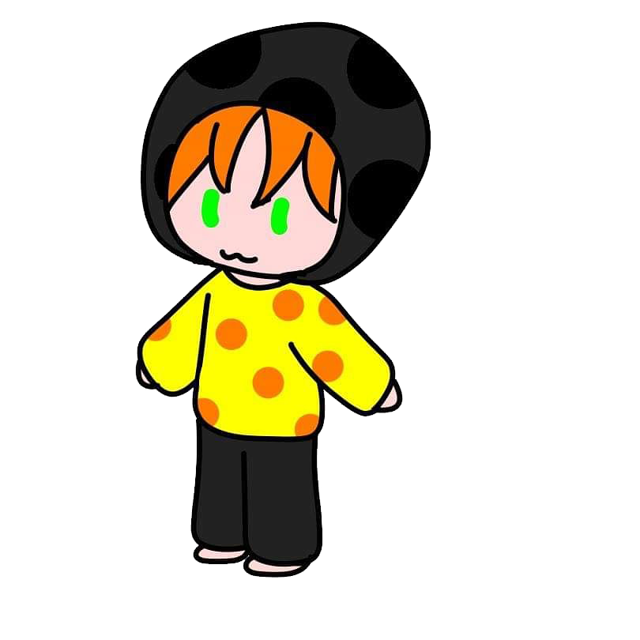

喜歡資訊跟音樂的人
學歷
新北市立中和高中
逢甲大學 資訊工程學系
經歷
中和流行音樂社16th 器材
2024 APCS 模擬測驗團隊 x APCS Guide 聯合 APCS 營隊 工人
比賽
APCS 觀念4 實作4
111中和高中學科能力競賽校內賽 資訊科 佳作
111新北市學科能力競賽 資訊科 佳作
112中和高中學科能力競賽校內賽 資訊科 第三名
112新北市學科能力競賽 資訊科 佳作
YTP少年圖靈計畫線上初賽
CPE 3題
113年度全國大專電腦軟體競賽(NCPC)